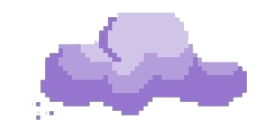

This page consists of games made by one of the creators, Kailiyah.
In this game, you venture out as a "Mokke" or a pink bunny. UH OH! The bunny had been teleported to a dimension of one of the seven wonders!! This dimension was full of mazes, but at the end of them lay deliecious cheeto puffs!! Help them through the maze to feed those poor starving bunnies!!
In this adventure, the player plays as a bunny creature called a "Mokke." The little bunny was roaming around the school, bored and needed something to do. Suddenly, hearing kids laughing outside, it sees them playing a game called 'Dodge Ball??' The mokke decides to try it with it's friends, where it dodges the faling balls from the sky, surviving as long as they can.
One day, Pusheen, a fluffy, (chubby), cat was very bored. But ater when it went to watch TV, it saw a DIY kit to make a rocket ship. Pusheen had bought it and made it as soon as it was shipped. They then blasted off into space, to find a YUMMY and VERY DELICIOUS space blob fish. Help Pusheen reach and eat the blob fish to make him happy!! BUT OH NO!! WATCH OUT!! There's a huge space German Shepard after Pusheen! Eat the blob fish, but run away from the dog to not lose that fluff (chubbiness)!!